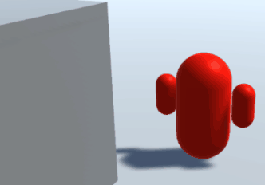
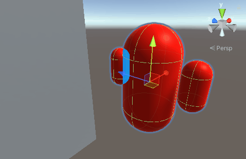
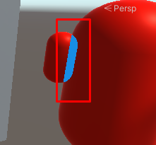
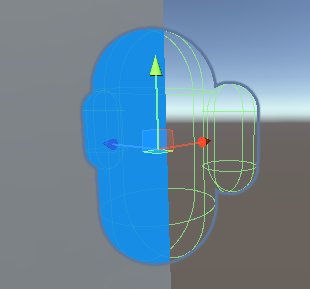

The Render Objects Renderer Feature lets you draw objects at a specific point in the frame rendering loop. You can interpret and write rendering data such as depth and stencil in different ways, or draw a set of GameObjectsThe fundamental object in Unity scenes, which can represent characters, props, scenery, cameras, waypoints, and more. A GameObject’s functionality is defined by the Components attached to it. More info
See in Glossary at a certain time.
The following example uses a Render Objects Renderer Feature to draw a GameObject in a different color if it’s behind other GameObjects.

First, create a GameObject and attach it to a new layerLayers in Unity can be used to selectively opt groups of GameObjects in or out of certain processes or calculations. This includes camera rendering, lighting, physics collisions, or custom calculations in your own code. More info
See in Glossary.
Next, create a Render Objects Renderer Feature that renders only the new layer, on top of the scene.
Next, adjust the Renderer Feature so it renders only the parts hidden behind other GameObjects, and in a different color.
Open the Overrides dropdown, then select Depth and set Depth Test to Greater.
The Renderer Feature now only renders a pixelThe smallest unit in a computer image. Pixel size depends on your screen resolution. Pixel lighting is calculated at every screen pixel. More info
See in Glossary if its depth is greater than the current pixel in the depth bufferA memory store that holds the z-value depth of each pixel in an image, where the z-value is the depth for each rendered pixel from the projection plane. More info
See in Glossary, which means the new pixel is behind another GameObject.
Create a new material that uses the Universal Render PipelineA series of operations that take the contents of a Scene, and displays them on a screen. Unity lets you choose from pre-built render pipelines, or write your own. More info
See in Glossary/Unlit shaderA program that runs on the GPU. More info
See in Glossary.
Set the Base Map color to a color of your choice.
In the Renderer Feature, in the Overrides section, set Material to the material you created.
When you move the GameObject behind other GameObjects, Unity now renders the hidden parts in the color you selected.

If you use a complex GameObject, the Renderer Feature might draw overlapping parts as though they’re hidden. This is because the depth of one part is greater than the overlapping part.

To fix this issue, disable rendering the whole GameObject, and create a new Renderer Feature that renders the non-hidden parts. Follow these steps:
In the URP Renderer asset, open the Opaque Layer Mask dropdown and disable the layer you added.
Unity now doesn’t draw the layer in the opaque render pass. The Renderer Feature still draws the hidden parts, because it’s in a different render pass.

Add a new Render Objects Renderer Feature.
Set Layer Mask to the new layer, so this Renderer Feature draws the GameObject.
Set Event to the AfterRenderingOpaques injection point.
To avoid the first Renderer Feature affecting the depth calculations in the new Renderer Feature, disable Write Depth in the Overrides section of the first Renderer Feature.
The first Renderer Feature draws the hidden parts, and the second Renderer Feature draws the rest of the GameObject.